Inhalt Index DeskTop Bronstein

 Computeralgebrasysteme Anwendungen von Computeralgebrasystemen Manipulation algebraischer Ausdrücke
Computeralgebrasysteme Anwendungen von Computeralgebrasystemen Manipulation algebraischer Ausdrücke


Mathematica stellt die in der folgenden Tabelle dargestellten Funktionen und Operatoren für die Umformung algebraischer Ausdrücke zur Verfügung.
| 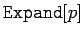 | löst die Potenzen und Produkte in einem Polynom p durch Ausmultiplikation auf |
| 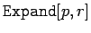 | multipliziert nur die Anteile in p aus, die r enthalten |
| 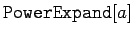 | löst auch Potenzen von Produkten und Potenzen von Potenzen auf |
| 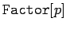 | faktorisiert ein Polynom vollständig |
| 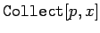 | ordnet das Polynom nach Potenzen von x |
| 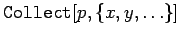 | das gleiche wie vorstehend, nur mit mehreren Variablen |
| 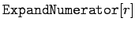 | entwickelt nur den Zähler eines rationalen Ausdrucks |
| 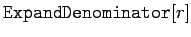 | entwickelt nur den Nenner |
| 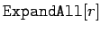 | multipliziert sowohl Zähler als auch Nenner vollständig aus |
| 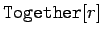 | stellt den Ausdruck mit einem gemeinsamen Nenner dar |
| 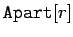 | stellt den Ausdruck als Summe von Termen mit einfachen Nennern dar (Partialbruchzerlegung) |
| 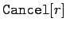 | kürzt gemeinsame Faktoren in den jeweiligen Termen |